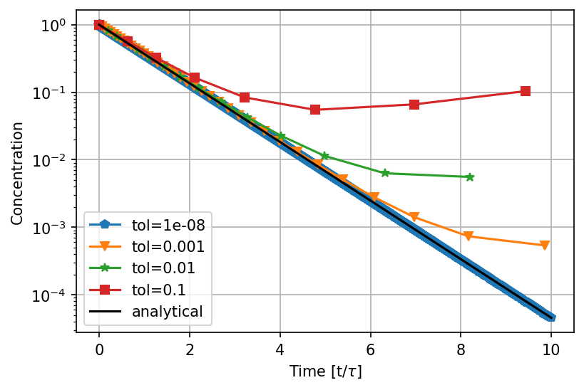

0D-systems and ordinary differential equations
University of Stavanger
Aug 14, 2023
Table of contents
Ordinary differential equations
Error analysis - Euler's method
Adaptive step size - Euler's method
Adaptive step size - Runge-Kutta method
Solving a set of ODE equations
0D models
By 0D models we mean models that are only dependent on one variable, usually time. These models are often called "lumped parameter models", because they ignore spatial dependency and the parameters in the model are adjusted to match experimental data. In many cases it is more important to predict how a system evolves in time, than the spatial dependency. A very recent example is the spread of infectious deceases, like Covid-19, where the evolution of total number of infected people might be the most important and not where the infection happens.
Ordinary differential equations
Physical systems evolves in space and time, and very often they are described by a ordinary differential equations (ODE) and/or partial differential equations (PDE). The difference between an ODE and a PDE is that an ODE only describes the changes in one spatial dimension or time, whereas a PDE describes a system that evolves in the \( x- \), \( y- \), \( z- \) dimension and/or in time. In the following we will spend a significant amount of time to explore one of the simplest algorithm, Eulers method. Sometimes this is exactly the algorithm you would like to use, but with very little extra effort much more sophisticated algorithms can easily be implemented, such as the Runge-Kutta fourth order method. However, all these algorithms, will at some point run into the same kind of troubles if used reckless. Thus we will use the Eulers method as a playground, investigate when the algorithm run into trouble and suggests ways to fix it, these approaches can easily be extended to the higher order methods. Most of the other algorithms boils down to the same idea of extrapolating a function using derivatives multiplied with a small step size.
A simple model for fluid flow
Let us consider a simple example from chemical engineering, a continuous stirred tank reactor (CSTR), see figure 1. The flow is incompressible (\( q_\text{out}=q_\text{in} \)), a fluid is entering on the top and exiting at the bottom, the tank has a fixed volume \( V \). Assume that the tank is filled with saltwater, and that freshwater is pumped into it, how much time does it take before \( 90\% \) of the saltwater is replaced with freshwater? The tank is well mixed, illustrated with the propeller, this means that at every time the concentration is uniform in the tank, i.e. that \( C(t)=C_\text{out}(t) \).
Figure 1: A continuous stirred tank model, \( C(t)=C_\text{out}(t) \), and \( q_\text{out}=q_\text{in} \).

The concentration \( C \) is measured in gram of salt per liter water, and the flow rate \( q \) is liter of water per day. The model for the salt balance in this system can be described in words by:
$$ \begin{align} [\text{accumulation of salt}] &= [\text{salt into the system}] - [\text{salt out of the system}]\nonumber\\ & + [\text{generation of salt}].\tag{1} \end{align} $$In our case there are no generation of salt within the system so this term is zero. The flow of salt into the system during a time \( \Delta t \) is: \( q_\text{in}(t)\cdot C_\text{in}(t)\cdot \Delta t=q(t)\cdot C_\text{in}(t)\cdot \Delta t \), the flow of salt out of the system is: \( q_\text{out}(t)\cdot C_\text{out}(t)\cdot \Delta t=q(t)\cdot C(t)\cdot \Delta t \), and the accumulation during a time step is: \( C(t+\Delta t)\cdot V - C(t)\cdot V \), hence:
$$ \begin{equation} C(t+\Delta t)\cdot V - C(t)\cdot V = q(t)\cdot C_\text{in}(t)\cdot \Delta t - q(t)\cdot C(t)\cdot \Delta t.\tag{2} \end{equation} $$Note that it is not a priori apparent, which time the concentrations and flow rates on the right hand side should be evaluated at, we could have chosen to evaluate them at \( t+\Delta t \), or at any time \( t\in [t,t+\Delta t] \). We will return to this point later in this chapter. Dividing by \( \Delta t \), and taking the limit \( \Delta t\to 0 \), we can write equation (2) as:
$$ \begin{equation} V\frac{dC(t)}{dt} = q(t)\left[C_\text{in}(t) - C(t)\right].\tag{3} \end{equation} $$Seawater contains about 35 gram salt/liter fluid, if we assume that the fresh water contains no salt, we have the boundary conditions \( C_\text{in}(t)=0 \), $C(0)=$35gram/l. The equation (3) the reduces to:
$$ \begin{equation} V\frac{dC(t)}{dt} = -qC(t),\tag{4} \end{equation} $$this equation can easily be solved, by dividing by \( C \), multiplying by \( dt \) and integrating:
$$ \begin{align} V\int_{C_0}^C\frac{dC}{C} &= -q\int_0^tdt,\nonumber\\ C(t)&=C_0e^{-t/\tau},\text{ where } \tau\equiv \frac{V}{q}.\tag{5} \end{align} $$This equation can be inverted to give \( t=-\tau\ln[C(t)/C] \). If we assume that the volume of the tank is 1m$^3$=1000liters, and that the flow rate is 1 liter/min, we find that $\tau$=1000min=0.69days and that it takes about $-0.69\ln0.9\simeq1.6$days to reduce the concentration by 90$\%$ to 3.5 gram/liter.
You might think that the CSTR is a very simple model, and it is, but this type of model is the basic building blocks in chemical engineering. By putting CSTR tanks in series and/or connecting them with pipes, the efficiency of manufacturing various type of chemicals can be investigated. Although the CSTR is an idealized model for the part of a chemical factory, it is actually a very good model for fluid flow in a porous media. By connecting CSTR tanks in series, one can model how chemical tracers propagate in the subsurface. The physical reason for this is that dispersion in porous media will play the role of the propellers and mix the concentration uniformly.
Euler's method
If the system gets slightly more complicated, e.g several tanks in series with a varying flow rate or if salt was generated in the tank, there is a good chance that we have to solve the equations numerically to obtain a solution. Actually, we have already developed a numerical algorithm to solve equation (3), before we arrived at equation (3) in equation (2). This is a special case of Eulers method, which is basically to replace the derivative in equation (3), with \( (C(t+\Delta t)-C(t))/\Delta t \). By rewriting equation (2), so that we keep everything related to the new time step, \( t+\Delta t \), on one side, we get:
$$ \begin{align} VC(t+\Delta t) &= VC(t) + qC_\text{in}(t) - qC(t),\tag{6}\\ C(t+\Delta t) &= C(t) + \frac{\Delta t}{\tau}\left[C_\text{in}(t) - C(t)\right]\tag{7}, \end{align} $$we introduce the short hand notation: \( C(t)=C_n \), and \( C(t+\Delta t)=C_{n+1} \), hence the algorithm can be written more compact as:
$$ \begin{equation} C_{n+1} = \left(1-\frac{\Delta t}{\tau}\right)C_n + \frac{\Delta t}{\tau}C_{\text{in},n}\tag{8}, \end{equation} $$In the script below, we have implemented equation (8).
def analytical(x):
return np.exp(-x)
def euler_step(c_old, c_in, tau_inv,dt):
fact=dt*tau_inv
return (1-fact)*c_old+fact*c_in
def ode_solv(c_into,c_init,t_final,vol,q,dt):
f=[];t=[]
tau_inv = q/vol
c_in = c_into #freshwater into tank
c_old = c_init #seawater present
ti=0.
while(ti <= t_final):
t.append(ti); f.append(c_old)
c_new = euler_step(c_old,c_in,tau_inv,dt)
c_old = c_new
ti += dt
return t,f
Figure 2: The concentration in the tank for different step size \( \Delta t \).

In figure 2 the result of the implementation is shown for different values of \( \Delta t \). Clearly we see that the results are dependent on the step size, as the step increases the numerical solution deviates from the analytical solution. At some point the numerical algorithm fails completely, and produces results that have no meaning.
Error analysis - Euler's method
There are two obvious questions:
- When does the algorithm produce unphysical results?
- What is an appropriate step size?
Let us consider the first question, clearly when the concentrations gets negative the solution is unphysical. From equation (8), we see that when \( \Delta t/\tau > 1 \), the concentration become negative. For this specific case (the CSTR), there is a clear physical interpretation of this condition. Inserting \( \tau=V/q \), we can rewrite the condition \( \Delta t/\tau < 1 \) as \( q\Delta t < V \). The volume into the tank during one time step is: \( q\Delta t \), which means that whenever we flush more than one tank volume through the tank during one time step, the algorithm fails. When this happens the new concentration in the tank cannot be predicted from the old one. This makes sense, because we could have switched to a new solution (e.g. seawater) during that time step, then the new solution does not have any relation to the old solution.
The second question, "what is an appropriate step size?", is a bit more difficult to answer. One strategy could be to simply use the results from chapter [Taylor], where we showed that the truncation error had a minimum value with a step size of \( 10^{-8} \) (when using a first order Taylor approximation). How does the value \( 10^{-8} \) relate to the step sizes in minutes used in our Euler implementation? In order to see the connection, we need to rewrite equation (3) in a dimensionless form, by making the following substitution: \( t\to t/\tau \):
$$ \begin{equation} \frac{dC(\tau)}{d\tau} = \left[C_\text{in}(\tau) - C(\tau)\right].\tag{9} \end{equation} $$As we found earlier $\tau = 1000$min, thus a step size of e.g. 1 min would correspond to a dimensionless time step of $\Delta t\to$1min/1000min$=10^{-3}$. This number can be directly compared to the value \( 10^{-8} \), which is the lowest value we can choose without getting into trouble with round off errors on the machine.
It is a good idea to formulate our equations in terms of dimensionless variables. The algorithms we develop can then be used in the same form regardless of changes in the system size and flow rates. Thus we do not need to rewrite the algorithm each time the physical system changes. This also means that if you use an algorithm developed by someone else (e.g. in Matlab or Python), you should always formulate the ODE system in dimensionless form before using the algorithm.
A second reason is that from a pure modeling point of view, dimensionless variables is a way of getting some understanding of what kind of combination of the physical parameters that describes the behavior of the system. For the case of the CSTR, there is a time scale \( \tau=V/q \), which is an intrinsic measure of time in the system. No matter what the flow rate through the tank or the volume of the tank is, it will always take 0.1$\tau$ before the concentration in the tank is reduced by 90%.
As already mentioned a step size of \( 10^{-8} \), is probably the smallest we can choose with respect to round off errors, but it is smaller than necessary and would lead to large simulation times. If it takes 1 second to run the simulation with a step size of \( 10^{-3} \), it would take \( 10^5 \) seconds or 1 day with a step size of \( 10^{-8} \). To continue the error analyses, we write our ODE for a general system as:
$$ \begin{align} \frac{dy}{dt}=f(y,t),label{eq:ode:ode} \end{align} $$or in discrete form:
$$ \begin{align} \frac{y_{n+1}-y_n}{h}-\frac{h}{2}y^{\prime\prime}(\eta_n)&=f(y,t).\nonumber\\ y_{n+1}&=y_n+hf(y,t)+\frac{h^2}{2}y^{\prime\prime}(\eta_n). \tag{10} \end{align} $$\( h \) is now the (dimensionless) step size, equal to \( \Delta t \) if the derivative is with respect to \( t \) or \( \Delta x \) if the derivative is respect to \( x \) etc. Note that we have also included the error term related to the numerical derivative, \( \eta_n\in[t_n,t_n+h] \). At each step we get an error term, and the distance between the true solution and our estimate, the local error, after \( N \) steps is:
$$ \begin{align} \epsilon=\sum_{n=0}^{N-1}\frac{h^2}{2}y^{\prime\prime}(\eta_n)&=\frac{h^2}{2}\sum_{n=0}^{N-1}f^\prime(y_n,\eta_n)\simeq\frac{h}{2}\int_{t_0}^{t_f}f^\prime(y,\eta)d\eta\nonumber\\ &=\frac{h}{2}\left[f(y(t_f),t_f)-f(y(t_0),t_0)\right].\tag{11} \end{align} $$Note that when we replace the sum with an integral in the equation above, this is only correct if the step size is not too large. From equation (11) we see that even if the error term on the numerical derivative is \( h^2 \), the local error is proportional to \( h \) (one order lower). This is because we accumulate errors for each step.
In the following we specialize to the CSTR, to see if we can gain some additional insight. First we change variables in equation (4): \( y=C(t)/C_0 \), and \( x=t/\tau \), hence:
$$ \begin{equation} \frac{dy}{dx}=-y.\tag{12} \end{equation} $$The solution to this equation is \( y(x)=e^{-x} \), substituting back for the new variables \( y \) and \( x \), we reproduce the result in equation (5). The local error, equation (11), reduces to:
$$ \begin{align} \epsilon=\frac{h}{2}\left[-y(x_f)+y(x_0)\right]=\frac{h}{2}\left[1-e^{-x_f}\right],\tag{13} \end{align} $$we have assumed that \( x_0=t_0/\tau=0 \). This gives the estimated local error at time \( x_f \). For \( x_f=0 \), the numerical error is zero, this makes sense because at \( x=0 \) we know the exact solution because of the initial conditions. When we move further away from the initial conditions, the numerical error increases, but equation (13) ensures us that as long as the step size is low enough we can get as close as possible to the true solution, since the error scales as \( h \) (at some point we might run into trouble with round off error in the computer).
Can we prove directly that we get the analytical result? In this case it is fairly simple, if we use Eulers method on equation (12), we get:
$$ \begin{align} \frac{y_{n+1}-y_n}{h}&=-y_nf.\nonumber\\ y_{n+1}&=(1-h)y_n, \tag{14} \end{align} $$or alternatively:
$$ \begin{align} y_1&=(1-h)y_0,\nonumber\\ y_2&=(1-h)y_1=(1-h)^2y_0,\nonumber\\ \vdots\nonumber\\ y_{N+1}&=(1-h)^{N}y_0=(1-h)^{x_f/h}y_0. \tag{15} \end{align} $$In the last equation, we have used the the fact the number of steps, \( N \), is equal to the simulation time divided by the step size, hence: \( N=x_f/h \). From calculus, the equation above is one of the well known limits for the exponential function: \( \lim_{x\to\infty}(1+k/x)^{mx}=e^{mk} \), hence:
$$ \begin{align} y_n&=(1-h)^{x_f/h}y_0\to e^{-x_f}, \tag{16} \end{align} $$when \( h\to0 \). Below is an implementation of the Euler algorithm in this simple case, we also estimate the local error, and global error after \( N \) steps.
import matplotlib.pyplot as plt
import numpy as np
def euler(tf,h):
t=[];f=[]
ti=0.;fi=1.
t.append(ti);f.append(fi)
global_err=0.
while(ti<= tf):
ti+=h
fi=fi*(1-h)
global_err += abs(np.exp(-ti)-fi)
t.append(ti);f.append(fi)
print("error= ", np.exp(-ti)-fi," est.err=", .5*h*(1-np.exp(-ti)))
print("global error=",global_err)
return t,f
t,f=euler(1,1e-5)
By changing the step size \( h \), you can easily verify that the local error systematically increases or decreases proportional to \( h \). Something curious happens with the global error when the step size is changed, it does not change very much. The global error involves a second sum over the local error for each step, which can be approximated as a second integration in equation (13):
$$ \begin{align} \epsilon_\text{global}=\frac{1}{2}\int_{0}^{x_f}\left[-y(x)+y(0)\right]dx=\frac{1}{2}\left[x_f+e^{-x_f}-1\right].\tag{17} \end{align} $$Note that the global error does not go to zero when the step size decreases, which can easily be verified by changing the step size. This is strange, but can be understood by the following argument: when the step size decreases the local error scales as \( \sim h \), but the number of steps scales as \( 1/h \), so the global error must scale as \( h\times 1/h \) or some constant value. Usually it is much easier to control the local error than the global error, this should be kept in mind if you ever encounter a problem where it is important control the global error. For the higher order methods that we will discuss later in this chapter, the global error will go to zero when \( h \) decreases.
The answer to our original question, ''What is an appropriate step size?'', will depend on what you want to achieve in terms of local or global error. In most practical situations you would specify a local error that is acceptable for the problem under investigation and then choose a step size where the local error always is lower than this value. In the next subsection we will investigate how to achieve this in practice.
Adaptive step size - Euler's method
We want to be sure that we use a step size that achieves a certain accuracy in our numerical solution, but at the same time that we do not waste simulation time using a too low step size. The following approach is similar to the one we derived for the Romberg integration, and a special case of what is known as Richardson Extrapolation. The method is easily extended to higher order methods.
We know that Eulers algorithm is accurate to second order. Our estimate of the new value, \( y_1^* \) (where we have used a$\,{}^*$ to indicate that we have used a step size of size \( h \)), should then be related to the true solution \( y(t_1) \) in the following way:
$$ \begin{align} y^*_1=y(t_1)+ch^2.\tag{18} \end{align} $$The constant \( c \) is unknown, but it can be found by taking two smaller steps of size \( h/2 \). If the steps are not too large, our new estimate of the value \( y_1 \) will be related to the true solution as:
$$ \begin{align} y_1=y(t_1)+2c\left(\frac{h}{2}\right)^2.\tag{19} \end{align} $$The factor 2 in front of \( c \) is because we now need to take two steps, and we accumulate a total error of \( 2c(h/2)^2=ch^2/2 \). It might not be completely obvious that the constant \( c \) should be the same in equation (18) and (19). If you are not convinced, there is an exercise at the end of the chapter. We define:
$$ \begin{align} \Delta\equiv y^*_1-y_1=c\frac{h^2}{2}.\tag{20} \end{align} $$The truncation error in equation (19) is:
$$ \begin{align} \epsilon=y(t_1)-y_1=2c\left(\frac{h}{2}\right)^2=\Delta.\tag{21} \end{align} $$Now we have everything we need: We want the local error to be smaller than some predefined tolerance, \( \epsilon^\prime \), or equivalently that \( \epsilon\le\epsilon^\prime \). To achieve this we need to use an optimal step size, \( h^\prime \), that gives us exactly the desired error:
$$ \begin{align} \epsilon^\prime=c\frac{{h^\prime}^2}{2}.\tag{22} \end{align} $$Dividing equation (22) by equation (21), we can estimate the optimal step size:
$$ \begin{align} h^\prime=h\sqrt{\left|\frac{\epsilon^\prime}{\epsilon}\right|},\tag{23} \end{align} $$where the estimated error, \( \epsilon \), is calculated from equation (21). Equation (23) serves two purposes, if the estimated error \( \epsilon \) is higher than the tolerance, \( \epsilon^\prime \), we have specified it will give us an estimate for the step size we should choose in order to achieve a higher accuracy, if on the other hand \( \epsilon^\prime > \epsilon \), then we get an estimate for the next, larger step. Before the implementation we note, as we did for the Romberg integration, that equation (21) also gives us an estimate for the error term in equation (19) as an improved estimate of \( y_1 \). This we get for free and will make our Euler algorithm accurate to \( h^3 \), hence the improved Euler step, \( \hat{y_1} \), is to subtract the error term from our previous estimate:
$$ \begin{align} \hat{y_1}=y_1-\epsilon=2y_1-y_1^*. \tag{24} \end{align} $$Below is an implementation of the adaptive Euler algorithm:
def one_step(c_old, c_in,h):
return (1-h)*c_old+h*c_in
def adaptive_euler(c_into,c_init,t_final,tol=1e-4):
f=[];t=[]
c_in = c_into #freshwater into tank
c_old = c_init #seawater present
ti=0.; h_new=1e-3;
no_steps=0
global_err=0.
while(ti <= t_final):
t.append(ti); f.append(c_old)
toli=10.*tol; # a high init tolerance to enter while loop
while(toli>tol):# first two small steps
hi=h_new
k1 = one_step(c_old,c_in,hi*.5)
k2 = one_step(k1,c_in,hi*.5)
# ... and one large step
k3 = one_step(c_old,c_in,hi)
toli = abs(k3-k2)
h_new=hi*np.sqrt(tol/toli)
no_steps+=3
toli=1.
c_old=2*k2-k3 # higher order correction
# normal Euler, uncomment and inspect the global error
# c_old = k2
ti += hi
global_err += abs(np.exp(-ti)-c_old)
print("No steps=", no_steps, "Global Error=", global_err)
return t,f
Figure 3: The concentration in the tank using adaptive Euler. Number of Euler steps are: 3006, 117, 48 and 36 for the different step sizes.

In figure 3 the result of the implementation is shown. Note that the number of steps for an accuracy of \( 10^{-6} \) is only about 3000. Without knowing anything about the accuracy, we would have to assume that we needed a step size of the order of \( h \) in order to reach a local accuracy of \( h \) because of equation (11). In the current case, we would have needed \( 10^7 \) steps, which would lead to unnecessary long simulation times.
In the previous example we set an absolute tolerance, and required that our estimate \( y_n \) always is within a certain bound of the true solution \( y(t_n) \), i.e. \( |y(t_n)-y_n|\le\epsilon^\prime \). This is a very strong demand, and sometimes it makes more sense to require that we also accept a relative tolerance proportional to function value. In some areas the solution might have a very large value, and then another possibility would be to have an \( \epsilon^\prime \) that varied with the function value: \( \epsilon^\prime = atol +|y|rtol \), where 'atol' is the absolute tolerance and 'rtol' is the relative tolerance. A sensible choice would be to set 'atol=rtol' (e.g. = \( 10^{-4} \)).
Runge-Kutta methods
Figure 4: Illustration of the Euler algorithm, and a motivation for using the slope a distance from the \( t_n \).

The Euler method only have an accuracy of order \( h \), and a global error that do not go to zero as the step size decrease. The Runge-Kutta methods may be motivated by inspecting the Euler method in figure 4. The Euler method uses information from the previous time step to estimate the value at the new time step. The Runge Kutta methods uses the information about the slope between the points \( t_n \) and \( t_n+h \). By inspecting figure 4, we clearly see that by using the slope at \( t_n+h/2 \) would give us a significant improvement. The 2. order Runge-Kutta method can be derived by Taylor expanding the solution around \( t_n+h/2 \), we do this by setting \( t_n+h=t_n+h/2+h/2 \):
$$ \begin{align} y(t_n+h)=y(t_n+\frac{h}{2})+\frac{h}{2}\left.\frac{dy}{dt}\right|_{t=t_n+h/2}+\frac{h^2}{4}\left.\frac{d^2y}{dt^2}\right|_{t=t_n+h/2} +\mathcal{O}(h^3).\tag{25} \end{align} $$Similarly we can expand the solution in \( y(t_n) \) about \( t_n+h/2 \), by setting \( t_n=t_n+h/2-h/2 \):
$$ \begin{align} y(t_n)=y(t_n+\frac{h}{2})-\frac{h}{2}\left.\frac{dy}{dt}\right|_{t=t_n+h/2}+\frac{h^2}{4}\left.\frac{d^2y}{dt^2}\right|_{t=t_n+h/2} -\mathcal{O}(h^3).\tag{26} \end{align} $$Subtracting these two equations the term \( y(t_n+\frac{h}{2}) \), and all even powers in the derivative cancels out:
$$ \begin{align} y(t_n+h)&=y(t_n)+h\left.\frac{dy}{dt}\right|_{t=t_n+h/2}+\mathcal{O}(h^3),\nonumber\\ y(t_n+h)&=y(t_n)+hf(y_{n+h/2},t_n+h/2)+\mathcal{O}(h^3).\tag{27} \end{align} $$In the last equation, we have used equation \eqref{eq:ode:ode}. Note that we now have an expression that is very similar to Eulers algorithm, but it is accurate to order \( h^3 \). There is one problem, and that is that the function \( f \) is to be evaluated at the point \( y_{n+1/2}=y(t_n+h/2) \) which we do not know. This can be fixed by using Eulers algorithm: \( y_{n+1/2}=y_n+h/2f(y_n,t_n) \). We can do this even if Eulers algorithm has an error term of order \( h^2 \), because the \( f \) in equation (27) is multiplied by \( h \), and thus our algorithm is still has an error term of order \( h^3 \).
Below is a Python implementation of equation (28):
def fm(c_old,c_in):
return c_in-c_old
def rk2_step(c_old, c_in, h):
k1=h*fm(c_old,c_in)
k2=h*fm(c_old+0.5*k1,c_in)
return c_old+k2
def ode_solv(c_into,c_init,t_final,h):
f=[];t=[]
c_in = c_into #freshwater into tank
c_old = c_init #seawater present
ti=0.
while(ti <= t_final):
t.append(ti); f.append(c_old)
c_new = rk2_step(c_old,c_in,h)
c_old = c_new
ti += h
return t,f
Figure 5: The concentration in the tank for different step size \( \Delta t \).

In figure 5 the result of the implementation is shown. Note that when comparing Runge-Kutta 2. order with Eulers method, see figure 5 and 2, we of course have the obvious result that a larger step size can be taken, without loosing numerical accuracy. It is also worth noting that we can take steps that is larger than the tank volume. Eulers method failed whenever the time step was larger than one tank volume (\( h=t/\tau>1 \)), whereas the Runge-Kutta method finds a physical solution for step sizes lower than twice the tank volume. If the step size is larger, we see that the concentration in the tank increases, which is clearly unphysical.
The Runge-Kutta fourth order method is one of he most used methods, it is accurate to order \( h^4 \), and has an error of order \( h^5 \). The development of the algorithm itself is similar to the 2. order method, but of course more involved. We just quote the result:
In figure 6 the result of the Runge-Kutta fourth order is shown, by comparing it to figure 5 it is easy to see that a larger step size can be chosen.
Figure 6: The concentration in the tank for different step size \( \Delta t \).

Adaptive step size - Runge-Kutta method
Just as we did with Eulers method, we can implement an adaptive method. The derivation is exactly the same, but this time our method is accurate to fourth order, hence the error term is of order \( h^5 \). We start by taking one large step of size \( h \), our estimate, \( y_1^* \) is related to the true solution, \( y(t_1) \), in the following way:
$$ \begin{align} y^*_1&=y(t_1)+ch^5,\tag{30} \end{align} $$Next, we take two steps of half the size, \( h/2 \), hence:
$$ \begin{align} y_1&=y(t)+2c\left(\frac{h}{2}\right)^5.\tag{31} \end{align} $$Subtracting equation (30) and (31), we find an expression similar to equation (20):
$$ \begin{align} \Delta\equiv& y_1^*-y_1=c\frac{15}{16}h^5,\tag{32} \end{align} $$or \( c=16\Delta/(15h^5) \). For the Euler scheme, \( \Delta \) also happened to be equal to the truncation error, but in this case it is:
$$ \begin{align} \epsilon=2c\left(\frac{h}{2}\right)^5=\frac{\Delta}{15}\tag{33} \end{align} $$we want the local error, \( \epsilon \), to be smaller than some tolerance, \( \epsilon^\prime \). The optimal step size, \( h^\prime \), that gives us exactly the desired error is then:
$$ \begin{align} \epsilon^\prime=2c\left(\frac{{h^\prime}}{2}\right)^5.\tag{34} \end{align} $$Dividing equation (34) by equation (33), we can estimate the optimal step size:
$$ \begin{align} h^\prime=h\left|\frac{\epsilon}{\epsilon}\right|^{1/5},\tag{35} \end{align} $$\( \epsilon \) can be calculated from equation (33). In figure 7 the result of an implementation is shown (see the exercises).
Figure 7: The concentration in the tank for different step size \( \Delta t \). Number of rk4 steps are: 138, 99, 72 and 66 for the different step sizes and 'rtol=0', for 'rtol=tol' the number of rk4 steps are 81, 72, 63, 63.

In general we can use the same procedure any method accurate to order \( h^p \), and you can easily verify that:
where \( \beta \) is a safety factor \( \beta\simeq0.8,0.9 \), and you should always be careful that the step size do not become too large so that the method breaks down. This can happens when \( \epsilon \) is very low, which may happen if \( y_1^*\simeq y_1 \) and/or if \( y_1^*\simeq y_1\simeq 0 \).
Conservation of mass
A mathematical model of a physical system should always be formulated in such a way that it is consistent with the laws of nature. In practical situations this statement is usually equivalent to state that the mathematical model should respect conservation laws. The conservation laws can be conservation of mass, energy, momentum, electrical charge, etc. In our example with the mixing tank, we were able to derive an expression for the concentration of salt out of the tank, equation (5), by demanding conservation of mass (see equation (2)).
A natural question to ask is then: If our mathematical model respect conservation of mass, are we sure that our solution method respect conservation of mass? We of course expect that when the grid spacing approaches zero our numerical solution will get closer and closer to the analytical solution. Clearly when \( \Delta x\to 0 \), the mass is conserved. So what is the problem? The problem is that in many practical problems we cannot always have a step size that is small enough to ensure that our solution always is close enough to the analytical solution. The physical system we consider might be very complicated (e.g. a model for the earth climate), and our ODE system could be a very small part of a very big system. A very good test of any code is to investigate if the code respect the conservation laws. If we know that our implementation respect e.g. mass conservation at the discrete level, we can easily test mass conservation by summing up all the mass entering, and subtracting the mass out of and present in our system. If the mass is not conserved exactly, there is a good chance that there is a bug in our implementation.
If we now turn to our system, we know that the total amount of salt in the system when we start is \( C(0)V \).
The amount entering is zero, and the amount leaving each time step is \( q(t)C(t)\Delta t \). Thus we should
expect that if we add the amount of salt in the tank to the amount that has left the system
we should always get an amount that is equal to the original amount. Alternatively, we expect
\( \int_{t_0}^t qC(t)dt + C(t)V -C(0)V=0 \). Adding the following code in the while(ti <= t_final): loop:
mout += 0.5*(c_old+c_new)*q*dt
mbal = (c_new*vol+mout-vol*c_init)/(vol*c_init)
it is possible to calculate the amount of mass lost (note that we have used the trapezoidal formula to calculate the integral). In the table below the fraction of mass lost relative to the original amount is shown for the various numerical methods.
| $\Delta t$ | \( h \) | Euler | RK 2. order | RK 4. order |
| 900 | 0.9 | -0.4500 | 0.3682 | 0.0776 |
| 500 | 0.5 | -0.2500 | 0.0833 | 0.0215 |
| 100 | 0.1 | -0.0500 | 0.0026 | 0.0008 |
| 10 | 0.01 | -0.0050 | 2.5E-05 | 8.3E-06 |
We clearly see from the table that the Runge-Kutta methods performs better than Eulers method, but all of the methods violates mass balance.
This might not be a surprise as we know that our numerical solution is always an approximation to the analytical solution. How can we then formulate an algorithm that will respect conservation laws at the discrete level? It turns out that for Eulers method it is not so difficult. Eulers algorithm at the discrete level (see equation (6)) is actually a two-step process: first we inject the fresh water while we remove the ``old`` fluid and then we mix. By thinking about the problem this way, it makes more sense to calculate the mass out of the tank as \( \sum_kq_kC_k\Delta t_k \). If we in our implementation calculates the mass out of the tank as:
mout += c_old*q*dt
mbal = (c_new*vol+mout-vol*c_init)/(vol*c_init)
We easily find that the mass is exactly conserved at every time for Eulers method. The concentration in the tank will of course not be any closer to the analytical solution, but if our mixing tank was part of a much bigger system we could make sure that the mass would always be conserved if we make sure that the mass out of the tank and into the next part of the system was equal to \( qC(t)\Delta t \).
Solving a set of ODE equations
What happens if we have more than one equation that needs to be solved? If we continue with our current example, we might be interested in what would happen if we had multiple tanks in series. This could be a very simple model to describe the cleaning of a salty lake by injecting fresh water into it, but at the same time this lake was connected to two nearby fresh water lakes, as illustrated in figure 8. The weakest part of the model is the assumption about complete mixing, in a practical situation we could enforce complete mixing with the salty water in the first tank by injecting fresh water at multiple point in the lake. For the two next lakes, the degree of mixing is not obvious, but salt water is heavier than fresh water and therefore it would sink and mix with the fresh water. Thus if the flow rate was slow, one might imaging that a more or less complete mixing could occur. Our model then could answer questions like, how long time would it take before most of the salt water is removed from the first lake, and how much time would it take before most of the salt water was cleared from the whole system? The answer to these questions would give practical input on how much and how fast one should inject the fresh water to clean up the system. If we had data from an actual system, we could compare our model predictions with data from the physical system, and investigate if our model description was correct.
Figure 8: A simple model for cleaning a salty lake that is connected to two lakes down stream.

For simplicity we will assume that all the lakes have the same volume, \( V \). The governing equations follows as before, by assuming mass balance (equation (1)):
$$ \begin{align} C_0(t+\Delta t)\cdot V - C_0(t)\cdot V &= q(t)\cdot C_\text{in}(t)\cdot \Delta t - q(t)\cdot C_0(t)\cdot \Delta t,\nonumber\\ C_1(t+\Delta t)\cdot V - C_1(t)\cdot V &= q(t)\cdot C_0(t)\cdot \Delta t - q(t)\cdot C_1(t)\cdot \Delta t,\nonumber\\ C_2(t+\Delta t)\cdot V - C_2(t)\cdot V &= q(t)\cdot C_1(t)\cdot \Delta t - q(t)\cdot C_2(t)\cdot \Delta t.\tag{36} \end{align} $$Taking the limit \( \Delta t\to 0 \), we can write equation (36) as:
$$ \begin{align} V\frac{dC_0(t)}{dt} &= q(t)\left[C_\text{in}(t) - C_0(t)\right],\tag{37}\\ V\frac{dC_1(t)}{dt} &= q(t)\left[C_0(t) - C_1(t)\right],\tag{38}\\ V\frac{dC_2(t)}{dt} &= q(t)\left[C_1(t) - C_2(t)\right].\tag{39} \end{align} $$Let us first derive the analytical solution: Only the first tank is filled with salt water \( C_0(0)=C_{0,0} \), \( C_1(0)=C_2(0)=0 \), and \( C_\text{in}=0 \). The solution to equation (37) is, as before \( C_0(t)=C_{0,0}e^{-t/\tau} \), inserting this equation into equation (38) we find:
$$ \begin{align} V\frac{dC_1(t)}{dt} &= q(t)\left[C_{0,0}e^{-t/\tau} - C_1(t)\right]\tag{40},\\ \frac{d}{dt}\left[e^{t/\tau}C_1\right]&= \frac{C_{0,0}}{\tau}\tag{41},\\ C_1(t)&=\frac{C_{0,0}t}{\tau}e^{-t/\tau}\tag{42}. \end{align} $$where we have use the technique of integrating factors when going from equation (40) to (41). Inserting equation (42) into equation (39), solving the equation in a similar way as for \( C_1 \) we find:
$$ \begin{align} V\frac{dC_2(t)}{dt} &= q(t)\left[\frac{C_{0,0}t}{\tau}e^{-t/\tau} - C_2(t)\right],\tag{43}\\ \frac{d}{dt}\left[e^{t/\tau}C_2\right]&= \frac{C_{0,0}t}{\tau},\tag{44}\\ C_2(t)&=\frac{C_{0,0}t^2}{2\tau^2}e^{-t/\tau}.\tag{45} \end{align} $$The numerical solution follows the exact same pattern as before if we introduce a vector notation. Before doing that, we rescale the time \( t\to t/\tau \) and the concentrations, \( \hat{C_i}=C_i/C_{0,0} \) for \( i=0,1,2 \), hence:
$$ \begin{align} \frac{d}{dt} \left( \begin{array}{c} \hat{C_0}(t)\\ \hat{C_1}(t)\\ \hat{C_2}(t) \end{array} \right) &=\left( \begin{array}{c} \hat{C_\text{in}}(t) - \hat{C_0}(t)\\ \hat{C_0}(t) - \hat{C_1}(t)\\ \hat{C_1}(t) - \hat{C_2}(t) \end{array} \right),\nonumber \tag{46} \\ \frac{d\mathbf{\hat{C}}(t)}{dt}&=\mathbf{f}(\mathbf{\hat{C}},t). \tag{47} \end{align} $$In figure 9 results of an implementation using Runge-Kutta 4. order is shown (see exercises for more details).
Figure 9: The concentration in the tanks.

Stiff sets of ODE and implicit methods
As already mentioned a couple of times, our system could be part of a much larger system. To illustrate this, let us now assume that we have two tanks in series. The first tank is similar to our original tank, but the second tank is a sampling tank, 1000 times smaller.
Figure 10: A continuous stirred tank model with a sampling vessel.

The governing equations can be found by requiring mass balance for each of the tanks (see equation (1):
$$ \begin{align} C_0(t+\Delta t)\cdot V_0 - C_0(t)\cdot V_0 &= q(t)\cdot C_\text{in}(t)\cdot \Delta t - q(t)\cdot C_0(t)\cdot \Delta t.\nonumber\\ C_1(t+\Delta t)\cdot V_1 - C_1(t)\cdot V_1 &= q(t)\cdot C_0(t)\cdot \Delta t - q(t)\cdot C_1(t)\cdot \Delta t. \tag{48} \end{align} $$Taking the limit \( \Delta t\to 0 \), we can write equation (48) as:
$$ \begin{align} V_0\frac{dC_0(t)}{dt} &= q(t)\left[C_\text{in}(t) - C_0(t)\right].\tag{49}\\ V_1\frac{dC_1(t)}{dt} &= q(t)\left[C_0(t) - C_1(t)\right].\tag{50} \end{align} $$Assume that the first tank is filled with seawater, \( C_0(0)=C_{0,0} \), and fresh water is flooded into the tank, i.e. \( C_\text{in}=0 \). Before we start to consider a numerical solution, let us first find the analytical solution: As before the solution for the first tank (equation (49)) is:
$$ \begin{equation} C_0(t)=C_{0,0}e^{-t/\tau_0}, \tag{51} \end{equation} $$where \( \tau_0\equiv V_0/q \). Inserting this equation into equation (50), we get:
$$ \begin{align} \frac{dC_1(t)}{dt} &= \frac{1}{\tau_1}\left[C_{0,0}e^{-t/\tau_0} - C_1(t)\right],\nonumber\\ \frac{d}{dt}\left[e^{t/\tau_2}C_1\right]&= \frac{C_{0,0}}{\tau_1}e^{-t(1/\tau_0-1/\tau_1)}\tag{52},\\ C_1(t)&=\frac{C_{0,0}}{1-\frac{\tau_1}{\tau_0}}\left[e^{-t/\tau_0}-e^{-t/\tau_1}\right],\tag{53} \end{align} $$where \( \tau_1\equiv V_1/q \).
Next, we will consider the numerical solution. You might think that these equations are more simple to solve numerically than the equations with three tanks in series discussed in the previous section. Actually, this system is much harder to solve with the methods we have discussed so far. The reason is that there are now two time scales in the system, \( \tau_1 \) and \( \tau_2 \). The smaller tank sets a strong limitation on the step size we can use, because we should never use step sizes larger than a tank volume. Thus if you use the code in the previous section to solve equation (49) and (50), it will not find the correct solution, unless the step size is lower than \( 10^{-3} \). Equations of this type are known as stiff.
There is no precise definition of ''stiff'', but it is used to describe a system of differential equations, where the numerical solution becomes unstable unless a very small step size is chosen. Such systems occurs because there are several (length, time) scales in the system, and the numerical solution is constrained by the shortest length scale. You should always be careful on how you scale your variables in order to make the system dimensionless, which is of particular importance when you use adaptive methods.
These types of equations are often encountered in practical applications. If our sampling tank was extremely small, maybe \( 10^6 \) smaller than the chemical reactor, then we would need a step size of the order of \( 10^{-8} \) or lower to solve the system. This step size is so low that we easily run into trouble with round off errors in the computer. In addition the simulation time is extremely long. How do we deal with this problem? The solution is actually quite simple. The reason we run into trouble is that we require that the concentration leaving the tank must be a small perturbation of the old one. This is not necessary, and it is best illustrated with Eulers method. As explained earlier Eulers method can be viewed as a two step process: first we inject a volume (and remove an equal amount: \( qC(t)\Delta t \)), and then we mix. Clearly when we try to remove more than what is left, we run into trouble. What we want to do is to remove or flood much more than one tank volume through the tank during one time step, this can be achieved by \( q(t)C(t)\Delta t\to q(t+\Delta t)C(t+\Delta t)\Delta t \). The term \( q(t+\Delta t)C(t+\Delta t)\Delta t \) now represents the mass out of the system during the time step \( \Delta t \).
The methods we have considered so far are known as explicit, whenever we replace the solution in the right hand side of our algorithm with \( y(t+\Delta t) \) or (\( y_{n+1} \)), the method is known as implicit. Implicit methods are always stable, meaning that we can take as large a time step that we would like, without getting oscillating solution. It does not mean that we will get a more accurate solution, actually explicit methods are usually more accurate.
Explicit methods are often called forward methods, as they use only information from the previous step to estimate the next value. The explicit methods are easy to implement, but get into trouble if the step size is too large. Implicit methods are often called backward methods as the next step cannot be calculated directly from the previous solution, usually a non-linear equation has to be solved. Implicit methods are generally much more stable, but the price is often lower accuracy. Many commercial simulators uses implicit methods extensively because they are stable, and stability is often viewed as a much more important criterion than numerical accuracy.
Let us consider our example further, and for simplicity use the implicit Eulers method:
$$ \begin{align} {C_0}_{n+1}V_0 - {C_0}_nV_0 &= q(t+\Delta t){C_\text{in}}_{n+1}\Delta t - q(t+\Delta t){C_0}_{n+1}\Delta t.\nonumber\\ {C_1}_{n+1}V_1 - {C_1}_nV_1 &= q(t+\Delta t){C_0}_{n+1}\Delta t - q(t+\Delta t){C_1}_{n+1}\Delta t. \tag{54} \end{align} $$This equation is equal to equation (48), but the concentrations on the right hand side are now evaluated at the next time step. The immediate problem is now that we have to find an expression for \( C_{n+1} \) that is given in terms of known variables. In most cases one needs to use a root finding method, like Newtons method, in order to solve equation (54). In this case it is straight forward to show:
$$ \begin{align} {C_0}_{n+1}&=\frac{{C_0}_n + \frac{\Delta t}{\tau_0}{C_\text{in}}_{n+1}}{1+\frac{\Delta t}{\tau_0}},\nonumber\\ {C_2}_{n+1}&=\frac{{C_1}_n + \frac{\Delta t}{\tau_1}{C_0}_{n+1}}{1+\frac{\Delta t}{\tau_1}}.\tag{55} \end{align} $$In figure 11 the result of the implementation is shown, note that quite large step sizes can be used without inducing non physical results.
Figure 11: The concentration in the tanks for \( h=0.01 \).

Exercise 1: Truncation error in Euler's method
In the following we will take a closer look at the adaptive Eulers algorithm and show that the constant \( c \) is indeed the same in equation (18) and (19). The true solution \( y(t) \), obeys the following equation:
$$ \begin{align} \frac{dy}{dt}&=f(y,t),\tag{56} \end{align} $$and Eulers method to get from \( y_0 \) to \( y_1 \) by taking one (large) step, \( h \) is:
$$ \begin{align} y^*_1&=y_0+hf(y_0,t_0),\tag{57} \end{align} $$We will also assume (for simplicity) that in our starting point \( t=t_0 \), the numerical solution, \( y_0 \), is equal to the true solution, \( y(t_0) \), hence \( y(t_0)=y_0 \).
Solution.
The local error, is the difference between the numerical solution and the true solution:
$$ \begin{align} \epsilon^*&=y(t_0+h)-y_{1}^*=y(t_0)+y^{\prime}(t_0)h+\frac{1}{2}y^{\prime\prime}(t_0)h^2+\mathcal{O}(h^3)\nonumber\\ &-\left[y_0+hf(y_0,t_0+h)\right], \tag{58} \end{align} $$where we have used Taylor expansion to expand the true solution around \( t_0 \), and equation (57). Using equation (56) to replace \( y^\prime(t_0) \) with \( f(y_0,t_0) \), we find:
$$ \begin{align} \epsilon^*=&y(t_0+h)-y_{1}^*=\frac{1}{2}y^{\prime\prime}(t_0)h^2\equiv ch^2, \tag{59} \end{align} $$where we have ignored terms of higher order than \( h^2 \), and defined \( c \) as \( c=y^{\prime\prime}(t_0)/2 \). Next we take two steps of size \( h/2 \) to reach \( y_1 \):
$$ \begin{align} y_{1/2}&=y_0+\frac{h}{2}f(y_0,t_0),\tag{60}\\ y_{1}&=y_{1/2}+\frac{h}{2}f(y_{1/2},t_0+h/2),\tag{61}\\ y_{1}&=y_{0}+\frac{h}{2}f(y_0,t_0)+\frac{h}{2}f(y_0+\frac{h}{2}f(y_0,t_0),t_0+h/2).\tag{62} \end{align} $$Note that we have inserted equation (60) into equation (61) to arrive at equation (62). The truncation error in this case is, as before:
$$ \begin{align} \epsilon&=y(t_0+h)-y_{1}=y(t_0)+y^{\prime}(t_0)h+\frac{1}{2}y^{\prime\prime}(t_0)h^2+\mathcal{O}(h^3)\nonumber\\ &-\left[y_{0}+\frac{h}{2}f(y_0,t_0)+\frac{h}{2}f(y_0+\frac{h}{2}f(y_0,t_0),t_0+h/2)\right].\tag{63} \end{align} $$This equation is slightly more complicated, due to the term involving \( f \) inside the last parenthesis, we can use Taylor expansion to expand it about \( (y_0,t_0) \):
$$ \begin{align} &f(y_0+\frac{h}{2}f(y_0,t_0),t_0+h/2)=f(y_0,t_0)\nonumber\\ &+\frac{h}{2}\left[f(y_0,t_0)\left.\frac{\partial f}{\partial y}\right|_{y=y_0,t=t_0} +\left.\frac{\partial f}{\partial t}\right|_{y=y_0,t=t_0}\right]+\mathcal{O}(h^2).\tag{64} \end{align} $$It turns out that this equation is related to \( y^{\prime\prime}(t_0,y_0) \), which can be seen by differentiating equation (56):
$$ \begin{align} \frac{d^2y}{dt^2}&=\frac{df(y,t)}{dt}=\frac{\partial f(y,t)}{\partial y}\frac{dy}{dt}+\frac{\partial f(y,t)}{\partial t} =\frac{\partial f(y,t)}{\partial y}f(y,t)+\frac{\partial f(y,t)}{\partial t}.\tag{65} \end{align} $$Hence, equation (64) can be written:
$$ \begin{align} f(y_0+\frac{h}{2}f(y_0,t_0),t_0+h/2)=f(y_0,t_0)+\frac{h}{2}y^{\prime\prime}(t_0,y_0),\tag{66} \end{align} $$hence the truncation error in equation (63) can finally be written:
$$ \begin{align} \epsilon=&y(t_1)-y_{1}=\frac{h^2}{4} y^{\prime\prime}(y_0,t_0)=\frac{1}{2}ch^2,\tag{67} \end{align} $$a) Show that when we take one step of size \( h \) from \( t_0 \) to \( t_1=t_0+h \), \( c=y^{\prime\prime}(t_0)/2 \) in equation (18).
Answer.
The local error, is the difference between the numerical solution and the true solution:
$$ \begin{align} \epsilon^*&=y(t_0+h)-y_{1}^*=y(t_0)+y^{\prime}(t_0)h+\frac{1}{2}y^{\prime\prime}(t_0)h^2+\mathcal{O}(h^3)\nonumber\\ &-\left[y_0+hf(y_0,t_0+h)\right], \tag{68} \end{align} $$where we have used Taylor expansion to expand the true solution around \( t_0 \), and equation (57). Using equation (56) to replace \( y^\prime(t_0) \) with \( f(y_0,t_0) \), we find:
$$ \begin{align} \epsilon^*=&y(t_0+h)-y_{1}^*=\frac{1}{2}y^{\prime\prime}(t_0)h^2\equiv ch^2, \tag{69} \end{align} $$hence \( c=y^{\prime\prime}(t_0)/2 \).
b) Show that when we take two steps of size \( h/2 \) from \( t_0 \) to \( t_1=t_0+h \), Eulers algorithm is:
$$ \begin{align} y_{1}&=y_{0}+\frac{h}{2}f(y_0,t_0)+\frac{h}{2}f(y_0+\frac{h}{2}f(y_0,t_0),t_0+h/2). \tag{70} \end{align} $$
Answer.
Note that we have inserted equation (71) into equation (72) to arrive at equation (73).
c) Find an expression for the local error when using two steps of size \( h/2 \), and show that the local error is: \( \frac{1}{2}ch^2 \)
Answer.
This equation is slightly more complicated, due to the term involving \( f \) inside the last parenthesis, we can use Taylor expansion to expand it about \( (y_0,t_0) \):
$$ \begin{align} &f(y_0+\frac{h}{2}f(y_0,t_0),t_0+h/2)=f(y_0,t_0)\nonumber\\ &+\frac{h}{2}\left[f(y_0,t_0)\left.\frac{\partial f}{\partial y}\right|_{y=y_0,t=t_0} +\frac{h}{2}\left.\frac{\partial f}{\partial t}\right|_{y=y_0,t=t_0}\right]+\mathcal{O}(h^2).\tag{75} \end{align} $$It turns out that this equation is related to \( y^{\prime\prime}(t_0,y_0) \), which can be seen by differentiating equation (56):
$$ \begin{align} \frac{d^2y}{dt^2}&=\frac{df(y,t)}{dt}=\frac{\partial f(y,t)}{\partial y}\frac{dy}{dt}+\frac{\partial f(y,t)}{\partial t} =\frac{\partial f(y,t)}{\partial y}f(y,t)+\frac{\partial f(y,t)}{\partial t}.\tag{76} \end{align} $$Hence, equation (75) can be written:
$$ \begin{align} f(y_0+\frac{h}{2}f(y_0,t_0),t_0+h/2)=f(y_0,t_0)+\frac{h}{2}y^{\prime\prime}(t_0,y_0),\tag{77} \end{align} $$hence the truncation error in equation (74) can finally be written:
$$ \begin{align} \epsilon=&y(t_1)-y_{1}=\frac{h^2}{4} y^{\prime\prime}(y_0,t_0)=\frac{1}{2}ch^2,\tag{78} \end{align} $$